Nous avons partagé notre introduction à l'usage de Maple pour l'étude des systèmes d'EDO en deux documents. Le présent document couvre seulement les systèmes d'EDO linéaires. Le deuxième document couvre, comme son titre le suggère, les systèmes d'EDO nonlinéaires. Ce n'est pas une raison mathématique qui justifie notre décision de partager notre étude des systèmes d'EDO en deux documents mais c'est une question de logiciel. Nous utilisons MathJax pour générer les formules mathématiques. En combinant les deux documents, nous obtenons un document qui est trop lent à produire par la plupart des fureteurs.
Considérons le système d'EDO \(X'(t) = f(t,X(t))\) où \(\displaystyle f:\mathbb{R} \times \mathbb{R}^n \to \mathbb{R}^n\). Notre but est de trouver une solution de ce système d'EDO qui aussi satisfait une condition initiale donnée; c'est-à-dire, de trouver une fonction différentiable \(\displaystyle X:I \to \mathbb{R}^n\) définie sur l'intervalle ouvert \(I \subset \mathbb{R}\) qui contient l'origine et telle que \(X\) satisfait ce système d'EDO avec une condition initiale \(X(0) = X_0\) donnée. La théorie affirme qu'il existe toujours une solution unique si \(f\) est continue et localement Lipshitz par rapport à la variable \(X\). Si \(f\) ne dépend pas du temps \(t\), alors mous disons que le système d'EDO est autonome. Dans ce cas, si \(X\) est la solution du système d'EDO, alors \(f(X(t))\) est la direction et vélocité de \(X\) au temps \(t\). En particulier, \(f(X(t))\) est tangent à l'orbite \(\{X(t) : t \in I\}\) au temps \(t\).
Pour les systèmes composés de deux EDO autonomes, Il est coutumier de tracer le champ de vecteurs associé au système d'EDO pour obtenir une image qualitative du comportement global des orbites de ce système. Pour plusieurs points (également distancés) \(X\) du plan, nous traçons à partir de chacun de ces points \(X\) un vecteur dans la direction \(f(X)\). Occasionnellement, la longueur du vecteur est proportionnelle à la norme de \(f(X)\).
Un système d'EDO de la forme \(X'(t) = A X(t)\), où \(A\) est une matrice constante de dimensions \(n \times n\), est appelé un système d'EDO linéaire (homogène). La solution théorique de ce système est \(\displaystyle X(t) = e^{t A} X(0)\), où l'exponentielle d'une matrice carrée \(B\) est définie par la série \(\displaystyle e^B = \sum_{n=0}^\infty \frac{1}{n!} B^n\). Cette série est toujours convergente. La notion de convergence de séries de matrices est indépendant du choix de la norme induite de matrices.
Exemple: Nous considérons la matrice définie par la commande suivante de Maple.
> with(LinearAlgebra): A := Matrix([[2,-1],[1,2]]);\[ A := \begin{bmatrix} 2 & -1 \\ 1 & 2 \end{bmatrix} \]
L'exponentielle de cette matrice est donnée par la commande suivante.
> expA := MatrixExponential(A);\[ expA := \begin{bmatrix} e^2 \cos(1) & -e^2 \sin(1) \\ e^2 \sin(1) & e^2 \cos(1) \end{bmatrix} \]
De plus, \(\displaystyle e^{tA}\) est donnée par la commande suivante.
> exptA := MatrixExponential(A,t);\[ exptA := \begin{bmatrix} e^{2t} \cos(t) & -e^{2t} \sin(t) \\ e^{2t} \sin(t) & e^{2t} \cos(t) \end{bmatrix} \]
Nous pouvons utiliser la fonction dsolve() pour résoudre le système d'EDO linéaire homogène \(X'(t) = A X(t)\). Nous représentons ce système d'EDO dans Maple de la façon suivante.
> eq1 := {diff(x1(t),t) = 2*x1(t) - x2(t), diff(x2(t),t) = x1(t) + 2*x2(t)};
\[
eq1 := \left\{ \frac{\text{d}}{\text{d}t} x1(1) = 2 x1(1) - x2(t) , \frac{\text{d}}{\text{d}t} x2(t) = x1(t) + 2 x2(t) \right\}
\]
> X := dsolve(eq1, {x1(t), x2(t)});
\[
X := \left\{ x1(t) = e^{2t} (\_C2 \cos(t) + \_C1 \sin(t), x2(t) = -e^{2t} ( \cos(t)\_C1 - \sin(t) \_C2 \right\}
\]
où _C1 et _C2 sont des constantes arbitraires. Cette expression est égale à \(\displaystyle e^{tA} \begin{bmatrix} \_C2 \\ -\_C1 \end{bmatrix}\).
Exemple (suite): Nous pouvons aussi résoudre \(X'(t) = A X(t)\) avec la condition initiale \(\displaystyle X(0) = \begin{bmatrix} 2 \\ 3 \end{bmatrix}\).
> eq2 := eq1 union {x1(0)=2,x2(0)=3};
\[
eq2 := \left\{ \frac{\text{d}}{\text{d}t} x1(1) = 2 x1(1) - x2(t) , \frac{\text{d}}{\text{d}t} x2(t) = x1(t) + 2 x2(t) , x1(0) = 2, x2(0) = 3\right\}
\]
La solution est donnée par la commande suivante.
> X := dsolve(eq2,{x1(t),x2(t)});
\[
X := \left\{ x1(t) = e^{2t} (2 \cos(t) - 3 \sin(t) ), x2(t) = -e^{2t} ( -3 \cos(t) - 2 \sin(t) )\right\}
\]
C'est le cas où _C1 = -3 et _C2 = 2 dans la solution générale ci-dessus.
Nous pouvons utiliser Maple pour tracer l'orbite de cette solution.
> X1:=subs(X,x1(t)); X2:=subs(X,x2(t)); plot([X1,X2,t=-1..5],axes=FRAME,labels=['x1','x2'],gridlines=true);\[ \begin{split} & x1(t) = e^{2t} (2 \cos(t) - 3 \sin(t) ) \\ & x2(t) = -e^{2t} ( -3 \cos(t) - 2 \sin(t) ) \end{split} \]
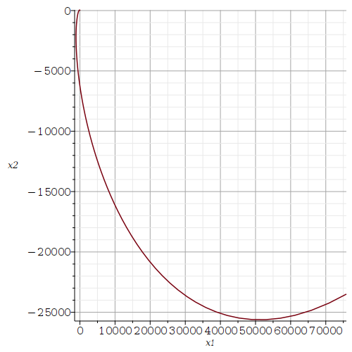
Pour évaluer la solution d'un système d'EDO linéaire homogène à
plusieurs valeurs de la variable indépendante \(t\), nous devons évaluer
\(\displaystyle e^{tA} X_0\) à plusieurs valeurs de \(t\). En
général, il est difficile et dispendieux en temps de calculer
l'exponentielle \(\displaystyle e^{tA}\) quand les dimensions de la
matrice carrée \(A\) sont grandes. Il y a cependant de beaux
résultats en algèbre linéaire qui nous aide (et aide les logiciels) à
calculer cette exponentielle. Par exemple, il est possible de trouver
une matrice inversible \(U\) telle que \(A = U D V\) où \(D\) est une
matrice bloc diagonale (e.g. une forme de Jordan ou une forme
canonique réelle). Nous avons alors que
\(\displaystyle e^{tA} = U e^{tD} V\) où
\(\displaystyle e^{tD}\) est beaucoup plus facile et rapide à évaluer
que \(\displaystyle e^{tA}\) car \(D\) a des composantes nulles hors de
la diagonale (un grand nombres de composantes nulles). Il
est facile
de multiplier des matrices qui ont
beaucoup de composantes nulles à des positions connues.
Nous ne considéreront pas la théorie générale des décompositions de matrices dans ce document. Mous considérons seulement les matrices de dimensions \(2 \times 2\). Dans ce cas, il peut y avoir:
Considérons le système d'EDO linéaires définis dans Maple par la commande suivante.
> eq3 := {diff(x1(t),t)=-4*x1(t)+ 2*x2(t), diff(x2(t),t)=-1*x1(t)-x2(t)};
\[
eq3 := \left\{ \frac{\text{d}}{\text{d}t} x1(t) = 4\; x1(t) + 2\; x2(t) ,
\frac{\text{d}}{\text{d}t} x2(t) = - x1(t) - x2(t) \right\}
\]
La matrice des coefficients du système d'EDO linéaire précédent est donnée ci-dessous.
> A := Matrix([[-4,2],[-1,-1]]);\[ A := \begin{bmatrix}-4 & 2 \\ -1 & -1 \end{bmatrix} \]
Les valeurs et vecteurs propres de A sont donnés par les commandes suivantes.
> with(LinearAlgebra): Eigenvectors(A);\[ \begin{bmatrix}-3 \\ -2 \end{bmatrix}, \begin{bmatrix} 2 & 1 \\ 1 & 1 \end{bmatrix} \]
Nous avons deux valeurs propres \(-3\) et \(-2\). Un vecteur propre associé à la valeur propre \(-3\) est donnée par la première colonne de la matrice de dimension \(2\times 2\) et un vecteur propre associé à la valeur propre \(-2\) est donné par la deuxième colonne. La matrice de dimension \(2\times 2\) peut être choisie pour la matrice \(U\) dans la décomposition de \(A\) mentionnée dans l'introduction de cette section. Nous utilisons dsolve() pour résoudre ce système d'EDO linéaires. Nous sommes principalement intéressé par l'aspect qualitatif des solutions. Donc, nous dessinons le champ de vecteurs associé à ce système.
> with(DEtools): DEplot(eq3,[x1(t),x2(t)],t=0..5, [[x1(0)=0.5,x2(0)=0], [x1(0)=-0.5,x2(0)=-0.1]], linecolor=[blue,red], thickness=1,color=green, arrows=small,stepsize=0.01);
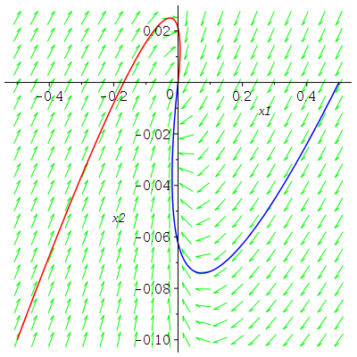
Nous avons aussi tracé deux orbites associées aux conditions initiales \(\displaystyle \begin{bmatrix}0.5 \\ 0 \end{bmatrix}\) (en bleu) et \(\displaystyle \begin{bmatrix} -0.5 \\ 0 \end{bmatrix}\) (en rouge) au temps \(t=0\). Comme on peut le constater à partir du champ de vecteurs, toutes les solutions convergent vers l'origine lorsque \(t \to \infty\). C'est typique des système d'EDO linéaires avec deux valeurs propres négatives. L'origine est appelé un puits ou un noeud stable. Si les deux valeurs propres auraient été positives, nous aurions alors que toutes les solutions s'éloignent de l'origine lorsque \(t \to \infty\). L'origine serait alors appelée une source ou un noeud instable.
Note: Une autre façon de dessiner le champ de vecteurs est à l'aide de la fonction dfieldplot().
> dfieldplot(eq3,[x1(t),x2(t)],t=-2..2,x1=-1..1,x2=-1..1):
Nous laissons au lecteur le plaisir d'exécuter cette commande. Mous laissons aussi au lecteur le plaisir de découvrir le comportement qualitatif des orbites d'un système d'EDO linéaire lorsqu'une des valeurs propres est positive et l'autre négative. L'origine est alors appelée un col.
Nous devons avoir une valeur propre réelle de multiplicité algébrique deux et de multiplicité géométrique un. Considérons le système d'EDO linéaire homogène défini par la commande suivante de Maple.
> eq4:={diff(x1(t),t)=3*x1(t)+x2(t), diff(x2(t),t)=3*x2(t)};
\[
eq4 := \left\{ \frac{\text{d}}{\text{d}t} x1(t) = 3\; x1(t) + x2(t) ,
\frac{\text{d}}{\text{d}t} x2(t) = 3\; x2(t) \right\}
\]
La matrice des coefficients de ce système d'EDO linéaires est donnée ci-dessous.
> A := Matrix([[3,1],[0,3]]);\[ A := \begin{bmatrix} 3 & 1 \\ 0 & 3 \end{bmatrix} \]
Les valeurs et vecteurs propres de la matrice A sont donnés par la commande suivante.
> Eigenvectors(A);\[ \begin{bmatrix} 3 \\ 3 \end{bmatrix}, \begin{bmatrix} 1 & 0 \\ 0 & 0 \end{bmatrix} \]
Il y a une seule valeur propre (i.e. \(3\)) de multiplicité algébrique deux et de multiplicité géométrique un. Pour obtenir une image qualitative du comportement global des orbites de ce système d'EDO linéaires, nous dessinons dans une même figure son champ de vecteurs et les orbites de quelques solutions particulières.
> DEplot(eq4,[x1(t),x2(t)],t=-1..1,[[x1(0)=2,x2(0)=-3],[x1(0)=-2,x2(0)=2]], linecolor=[blue,green],thickness=1,stepsize=0.01);
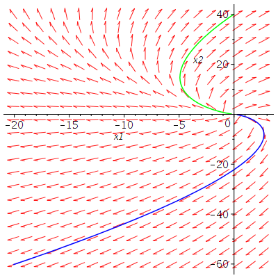
Comme nous pouvons déduire du champ de vecteurs, toutes les solutions s'éloignent de l'origine lorsque \(t \to \infty\). L'origine est un noeud instable. Si la valeur propre aurait été négative, alors toutes les solutions auraient convergé vers l'origine lorsque \(t \to \infty\). L'origine serait alors un noeud stable.
Considérons le système d'EDO linéaires homogènes défini par la commande suivante de Maple.
> eq5:={diff(x1(t),t)=-2*x1(t)-x2(t), diff(x2(t),t)=x1(t)-2*x2(t)};
\[
eq5 := \left\{ \frac{\text{d}}{\text{d}t} x1(t) = -0.2\; x1(t) - x2(t) ,
\frac{\text{d}}{\text{d}t} x2(t) = x1(t) - 0.2\; x2(t) \right\}
\]
La matrice des coefficients de ce système d'EDO linéaires est donnée ci-dessous.
> A := Matrix([[-1/5,-1],[1,-1/5]]);\[ A := \begin{bmatrix} -\frac{1}{5} & -1 \\ 1 & -\frac{1}{5} \end{bmatrix} \]
Les valeurs et vecteurs propres de la matrice A sont donnés par la commande suivante.
> with(LinearAlgebra): Eigenvectors(A);\[ \begin{bmatrix}-\frac{1}{5} + I \\ -\frac{1}{5} - I \end{bmatrix}, \begin{bmatrix} I & 1 \\ -I & 1 \end{bmatrix} \]
Il y a deux valeurs propres imaginaires conjuguées auxquelles sont associées deux vecteur propres linéairement indépendants. Les étudiants voient dans un cours d'introduction aux EDO que la solution contient des termes de la forme \(\displaystyle e^{at}\cos(bt)\) et \(\displaystyle e^{a t}\sin(bt)\) si \(a \pm b i\) sont des valeurs propres complexes conjuguées.
> dsolve(eq5, {x1(t), x2(t)});
\[
\left\{ x1(t) = e^{-\frac{t}{5}} (\_C2 \cos(t) + \_C1 \sin(t)), x2(t) = -e^{-\frac{t}{5}} (\cos(t)\_C1 - \sin(t) \_C2) \right\}
\]
Comme on à fait précédemment, pour obtenir une image qualitative du comportement global des orbites de ce système d'EDO linéaires, nous dessinons dans une même figure son champ de vecteurs et les orbites de quelques solutions particulières.
> DEplot(eq5,[x1(t),x2(t)],t=0..10,[[x1(0)=0.1,x2(0)=-0.1],[x1(0)=-0.1,x2(0)=0.1]], linecolor=[blue,green],thickness=1, stepsize=0.01);
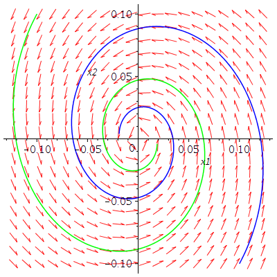
Comme nous pouvons constater à partir du champ de vecteurs, toutes les solutions convergent vers l'origine lorsque \(t \to \infty\). L'origine est appelée une foyer stable. Si la partie réelle de la paire de valeurs propres complexes conjuguées aurait été positive, alors toutes les solutions s'éloigneraient de l'origine lorsque \(t \to \infty\). L'origine serait alors appelée un foyer instable.
Nous présentons trois exemples.
Exemple: Nous considérons le système d'EDO linéaires non-homogènes défini par le commande suivante de Maple.
> restart: with(plots):
eq6 := {diff(x1(t),t)=-2*x1(t)-2*x2(t)+sin(2*t), diff(x2(t),t)=4*x1(t)+2*x2(t)+cos(2*t)};
\[
eq6 := \left\{ \frac{\text{d}}{\text{d}t} x1(t) = -2\; x1(t) - 2\; x2(t) + \sin( 2t) ,
\frac{\text{d}}{\text{d}t} x2(t) = 4\; x1(t) + 2\; x2(t) + \cos(2 t) \right\}
\]
Nous pouvons utiliser dsolve() pour trouver la solution générale de ce système d'EDO mais nous sommes principalement intéressé au comportement qualitatif des orbites lorsque \(t \to \infty\). Donc, nous résolvons numériquement ce système d'EDO avec la condition initiale \( (-0.5,0.5) \) à \(t=0\).
> sol := dsolve(eq6 union {x1(0)=-0.5, x2(0)=0.5},[x1(t),x2(t)],numeric,
output= procedurelist, method=rkf45);
odeplot(sol,[t,x1(t)],0..30,axes=BOXED,labels=[`t`,`x1(t)`],gridlines=true);
odeplot(sol,[t,x2(t)],0..30,axes=BOXED,labels=[`t`,`x2(t)`],gridlines=true);
\[
sol := \text{proc(x\_rkf45) ... end proc}
\]
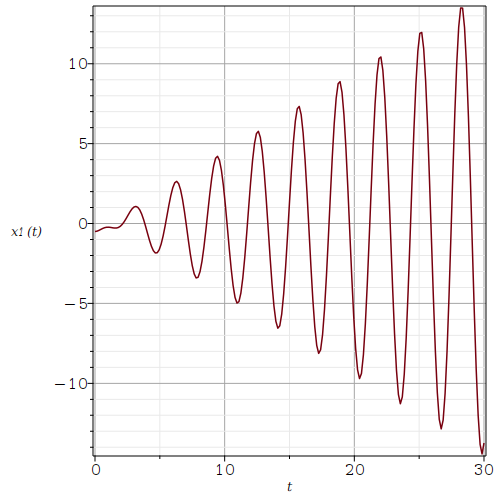
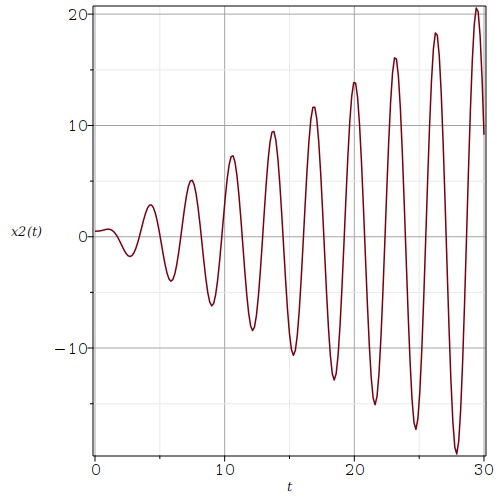
Note: Il existe une formule explicite pour la solution générale d'un système d'EDO linéaires non-homogènes comme celui que nous venons juste de considérer. Le lecteur peut trouver cette formule dans la majorité des manuels d'introduction aux ODE.
Exemple: Un modèle mathématique pour le flot du plomb dans le corps est décrit schématiquement par la figure suivante.
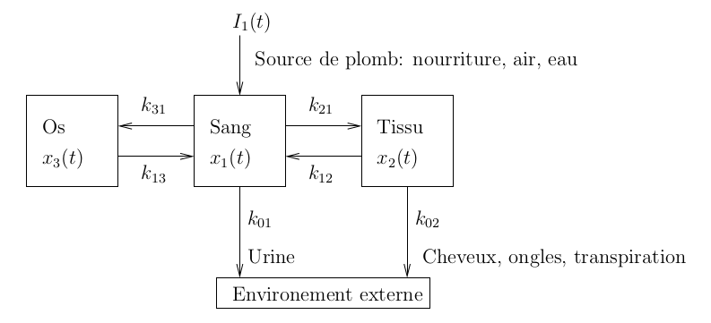
En supposant que le taux de variation du plomb est la différence entre le taux de variation entrant et sortant, nous obtenons le système d'EDO suivant.
\[ \begin{split} x_1'(t) &= -(k_{01} + k_{21} + k_{31})x_1(t) + k_{12} x_2(t) + k_{13}x_3(t) + I_1(t) \\ x_2'(t) &= k_{21} x_1(t) - (k_{02} + k_{12})x_2(t) \\ x_3'(t) &= k_{31}x_1(t) - k_{13}x_3(t) \end{split} \]où \(x_1(t),x_2(t)\) et \(x_3(t)\) sont respectivement les quantités en microgrammes (μg ou mcg) de plomb dans le sang, les tissus et les os au temps \(t\) en jours (j). Les \(k_{ij}\) sont les constantes de proportionnalité pour les taux de transfert du plomb du sang aux tissus, du sang aux os, etc. Nous avons les valeurs suivantes pour les \(k_{ij}\).
| k12 | k21 | k13 | k31 | k01 | k02 |
|---|---|---|---|---|---|
| 0.0124 | 0.0111 | 0.000035 | 0.0039 | 0.0211 | 0.0162 |
Nous considérons en premier une personne qui demeure dans un environnement contaminé. Nous assumons que le taux d'absorption \(I_1\) du plomb dans le sang est une constante de \(49.3\) μg/j. Nous dessinons sur le même figure les quantités de plomb dans le sang, les os et les tissus en fonction du temps \(t\) pour \(0 \leq t \leq 800\). Nous assumons qu'il n'y a pas de plomb dans le sang, les os et les tissus initialement.
> restart: with(plots):
SYST := {diff(x1(t),t) = -(k01+k21+k31)*x1(t) + k12*x2(t) + k13*x3(t) + I1(t),
diff(x2(t),t) = k21*x1(t) - (k02+k12)*x2(t),
diff(x3(t),t) = k31*x1(t) - k13*x3(t) };
SYST1 := subs({k12=0.0124, k21=0.0111, k13=0.000035, k31=0.0039, k01=0.0211,
k02=0.0162, I1(t)=49.3}, SYST);
SYST1init := SYST1 union {x1(0)=0, x2(0)=0, x3(0)=0};
sol1 := dsolve(SYST1init, [x1(t),x2(t),x3(t)] , type=numeric):
plot1 := odeplot(sol1, [t,x1(t)], 0..800, color=red):
plot2 := odeplot(sol1, [t,x2(t)], 0..800, color=green):
plot3 := odeplot(sol1, [t,x3(t)], 0..800, color=black):
display( {plot1, plot2, plot3}, gridlines=true, labels=["t","x_1,x_2,x_3"]);
\[
\begin{split}
& SYST := \bigg\{\frac{\text{d}}{\text{d} t} x1(t) = -(k01 + k21 + k31)\,
x1(t) + k12\,x2(t) + k13\,x3(t) + I1(t),\\
& \qquad \frac{\text{d}}{\text{d} t} x2(t) = k21\,x1(t) - (k02 + k12)\,x2(t),
\frac{\text{d}}{\text{d} t} x3(t) = k31\,x1(t) - k13\,x3(t) \bigg\} \\
& SYST1 := \bigg\{ \frac{\text{d}}{\text{d} t} x1(t) = -0.0361\,
x1(t) + 0.0124\,x2(t) + 0.000035\,x3(t) + 49.3,\\
& \qquad \frac{\text{d}}{\text{d} t} x2(t) = 0.0111\,x1(t) - 0.0286\,x2(t),
\frac{\text{d}}{\text{d} t} x3(t) = 0.0039\,x1(t) - 0.000035\,x3(t) \bigg\}\\
& SYST1init := \bigg\{ \frac{\text{d}}{\text{d} t} x1(t) = -0.0361\,
x1(t) + 0.0124\,x2(t) + 0.000035\,x3(t) + 49.3,\\
& \qquad \frac{\text{d}}{\text{d} t} x2(t) = 0.0111\,x1(t) - 0.0286\,x2(t),
\frac{\text{d}}{\text{d} t} x3(t) = 0.0039\,x1(t) - 0.000035\,x3(t),\\
&\qquad x1(0) = 0, x2(0) = 0, x3(0) = 0 \bigg\}
\end{split}
\]
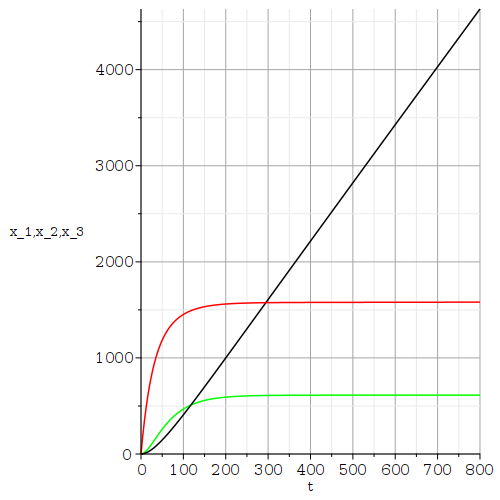
La quantité de plomb dans les os augmente sans limite supérieure. Il n'est pas difficile d'imaginer ce qui va arriver à cette personne.
Nous analysons ce qui arrive si la personne est transférée dans un environnement sans plomb après 400 jours. Ainsi, le taux d'absorption du plomb dans le sang est donné par \(I_1(t) = 49.3\) μg/j pour \( 0 \leq t \leq 400\) jours et \(I_1(t) = 0\) μg/j pour \(t > 400\) jours. Nous dessinons sur le même figure les quantités de plomb dans le sang, les os et les tissus en fonction du temps \(t\) pour \(0 \leq t \leq 1200\). Comme précédemment, nous assumons qu'il n'y a pas de plomb dans le sang, les os et les tissus initialement. Puisque le taux d'absorption du plomb dans le sang est une fonction discontinue, nous divisons l'intégration numérique en deux parties: de 0 à 400 jours avec un taux d'absorption constant de 49.3 μg/j, et de 400 à 1200 jours avec un taux d'absorption de 0 μg/j. Les conditions initiales pour la période de 400 à 1200 jours sont données par les valeurs de \(x_1, x_2\) et \(x_3\) à la fin de la période de 0 à 400 jours.
> initx1 := subs(sol1(400), x1(t)):
initx2 := subs(sol1(400), x2(t)):
initx3 := subs(sol1(400), x3(t)):
plot1 := odeplot(sol1, [t,x1(t)], 0..400, color=red):
plot2 := odeplot(sol1, [t,x2(t)], 0..400, color=green):
plot3 := odeplot(sol1, [t,x3(t)], 0..400, color=black):
SYST2 := subs({k12=0.0124, k21=0.0111, k13=0.000035, k31=0.0039, k01=0.0211,
k02=0.0162, I1(t)=0}, SYST);
SYST2init := SYST2 union {x1(400)=initx1, x2(400)=initx2, x3(400)=initx3};
sol2 := dsolve(SYST2init, [x1(t),x2(t),x3(t)] , type=numeric):
plot4 := odeplot(sol2, [t,x1(t)], 400..1200, color=red):
plot5 := odeplot(sol2, [t,x2(t)], 400..1200, color=green):
plot6 := odeplot(sol2, [t,x3(t)], 400..1200, color=black):
display( {plot1, plot2, plot3, plot4, plot5, plot6}, gridlines=true,
labels=["t","x_1,x_2,x_3"]);
\[
\begin{split}
& SYST2 := \bigg\{ \frac{\text{d}}{\text{d} t} x1(t) = -0.0361\,
x1(t) + 0.0124\,x2(t) + 0.000035\,x3(t),\\
& \qquad \frac{\text{d}}{\text{d} t} x2(t) = 0.0111\,x1(t) - 0.0286\,x2(t),
\frac{\text{d}}{\text{d} t} x3(t) = 0.0039\,x1(t) - 0.000035\,x3(t) \bigg\}\\
& SYST1init := \bigg\{ \frac{\text{d}}{\text{d} t} x1(t) = -0.0361\,
x1(t) + 0.0124\,x2(t) + 0.000035\,x3(t),\\
& \qquad \frac{\text{d}}{\text{d} t} x2(t) = 0.0111\,x1(t) - 0.0286\,x2(t),
\frac{\text{d}}{\text{d} t} x3(t) = 0.0039\,x1(t) - 0.000035\,x3(t),\\
&\qquad x1(400) = 1577.65535864022, x2(400) = 611.957598054888,
x3(400) = 2215.88561521599 \bigg\}
\end{split}
\]
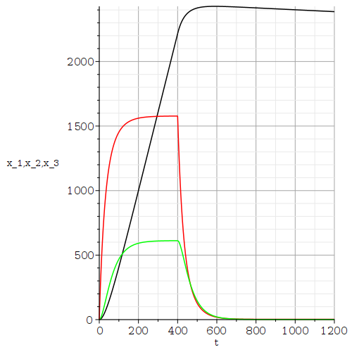
Il y a une baisse radicale des quantités de plomb dans le sang et les tissus. La présence de plomb dans le sang et les tissus peut être éliminée. Cependant, la décroissance de la quantité de plomb dans les os est très faible. Le rétablissement sera très long.
Nous analysons maintenant ce qui arrive si, après 400 jours, la personne est transférée dans un environnement sans plomb et si un médicament contre le plomb lui est aussi administré. Nous assumons que le médicament contre le plomb a pour effet d'augmenter le taux \(k_{13}\) de transfert du plomb des os au sang de \(0.000035\) à \(0.0009\). Nous dessinons sur le même figure les quantités de plomb dans le sang, les os et les tissus en fonction du temps \(t\) pour \(0 \leq t \leq 1200\). Comme précédemment, nous assumons qu'il n'y a pas de plomb dans le sang, les os et les tissus initialement.
> SYST3 := subs({k12=0.0124, k21=0.0111, k13=0.0009, k31=0.0039, k01=0.0211,
k02=0.0162, I1(t)=0}, SYST);
SYST3init := SYST3 union {x1(400)=initx1, x2(400)=initx2, x3(400)=initx3};
sol3 := dsolve(SYST3init, [x1(t),x2(t),x3(t)] , type=numeric):
plot4 := odeplot(sol3, [t,x1(t)], 400..1200, color=red):
plot5 := odeplot(sol3, [t,x2(t)], 400..1200, color=green):
plot6 := odeplot(sol3, [t,x3(t)], 400..1200, color=black):
display( {plot1, plot2, plot3, plot4, plot5, plot6}, gridlines=true,
labels=["t","x_1,x_2,x_3"]);
\[
\begin{split}
& SYST2 := \bigg\{ \frac{\text{d}}{\text{d} t} x1(t) = -0.0361\,
x1(t) + 0.0124\,x2(t) + 0.000035\,x3(t),\\
& \qquad \frac{\text{d}}{\text{d} t} x2(t) = 0.0111\,x1(t) - 0.0286\,x2(t),
\frac{\text{d}}{\text{d} t} x3(t) = 0.0039\,x1(t) - 0.0009\,x3(t) \bigg\}\\
& SYST1init := \bigg\{ \frac{\text{d}}{\text{d} t} x1(t) = -0.0361\,
x1(t) + 0.0124\,x2(t) + 0.000035\,x3(t),\\
& \qquad \frac{\text{d}}{\text{d} t} x2(t) = 0.0111\,x1(t) - 0.0286\,x2(t),
\frac{\text{d}}{\text{d} t} x3(t) = 0.0039\,x1(t) - 0.0009\,x3(t),\\
&\qquad x1(400) = 1577.65535864022, x2(400) = 611.957598054888,
x3(400) = 2215.88561521599 \bigg\}
\end{split}
\]
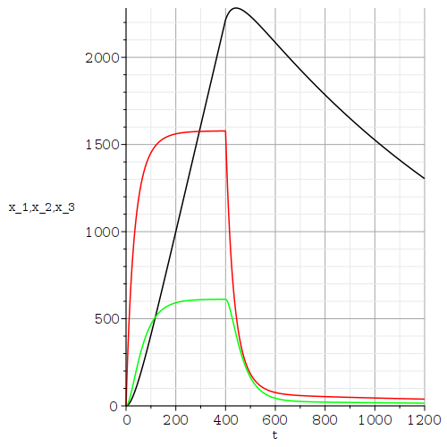
Il y a une baisse radicale des quantités de plomb dans le sang et les tissus. De plus, La décroissance de la quantité de plomb dans les os est remarquable.
Le lecteur devrait examiner la situation où la personne demeure dans un environnement contaminé avec un taux constante d'absorption \(I_1\) du plomb dans le sang de \(49.3\) μg/j mais prend le médicament contre le plomb à partir du 400th jour.
Malheureusement, nous ne pouvons pas trouver la référence exacte pour l'origine de cet exemple. Cet exemple se trouve à plusieurs endroits mais la référence à la source de cet exemple n'est jamais mentionnée. Cet exemple peut probablement être inclus dans la liste des fameux exemples classiques pour lesquelles nous avons perdu la référence principale.
Exemple: Nous avons trois réservoirs: T1, T2 et T3. Les réservoirs T1 et T3 contiennent chacun 400 litres (l) d'eau pur. Le réservoir T2 contient 400 l d'une solution saline avec une concentration de 2 gr/l de sel. Nous conduisons l'expérience suivante.
Cette expérience est résumée par le schéma suivant.
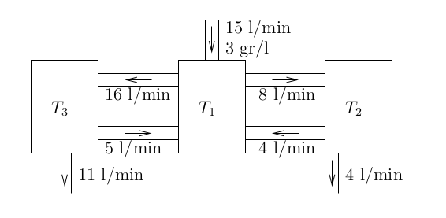
Nous assumons pour chacun des réservoirs que le contenu est bien mélangé et que la concentration de sel est instantanément uniforme. Notre but est de trouver et d'analyser un système d'EDO d'ordre un qui décrit l'expérience. Plus spécifiquement, si \(x_i(t)\) est la quantité de sel dans le réservoir Ti au temps \(t\) en minutes, nous présentons un système d'EDO d'ordre un en termes des \(x_i\), nous résolvons ce système d'EDO, et traçons les graphes des \(x_i\) en fonction de \(t\) pour déterminer le comportement à long terme de cette expérience.
Nous avons que la concentration (gr/l) de sel dans le réservoir Ti au temps \(t\) en minutes est la quantité \(x_i(t)\) gr de sel dans le réservoir divisée par 400 litres, le volume de la solution dans le réservoir. De plus, le taux de variation (gr/min) de la quantité de sel qui s'écoule d'un réservoir à un autre réservoir ou qui s'échappe d'un réservoir est le produit du taux d'écoulement (l/min) avec la concentration de sel (gr/l). À l'aide de ces observations, nous obtenons le système d'EDO d'ordre un qui est décrit par la commande suivante dans Maple.
> restart: with(plots):
eq := { diff(x1(t),t) = 45 - 24*x1(t)/400 + 4*x2(t)/400 + 5*x3(t)/400,
diff(x2(t),t) = 8*x1(t)/400 - 8*x2(t)/400,
diff(x3(t),t) = 16*x1(t)/400 - 16*x3(t)/400 };
\[
\begin{split}
& eq := \bigg\{ \frac{\text{d}}{\text{d} t} x1(t) = 45 - \frac{3 x1(t)}{50}
+ \frac{x2(t)}{100} + \frac{x3(t)}{80}, \frac{\text{d}}{\text{d} t} x2(t)
= \frac{x1(t)}{50} - \frac{x2(t)}{50}, \\
& \frac{\text{d}}{\text{d} t} x3(t) = \frac{x1(t)}{25} -
\frac{x3(t)}{25} \bigg\}
\end{split}
\]
Puisque que nous avons initialement 0 gr de sel dans les réservoirs T1 et T3, et 800 gr de sel dans le réservoir T2, la condition initiale est donnée par la commande suivante dans Maple.
> inits := {x1(0)=0, x2(0)=800, x3(0)=0};
Nous pouvons maintenant résoudre ce système d'EDO et tracer les graphes des \(x_i\) en fonction du temps \(t\).
> sol := dsolve( eq union inits, [x1(t),x2(t),x3(t)], numeric,
output=procedurelist, method=rkf45):
plot1 := odeplot(sol,[t,x1(t)],t=0..600,color=red):
plot2 := odeplot(sol,[t,x2(t)],t=0..600,color=blue):
plot3 := odeplot(sol,[t,x3(t)],t=0..600,color=black):
display({plot1,plot2,plot3}, gridlines=true, labels=["t","x_1,x_2,x_3"]);
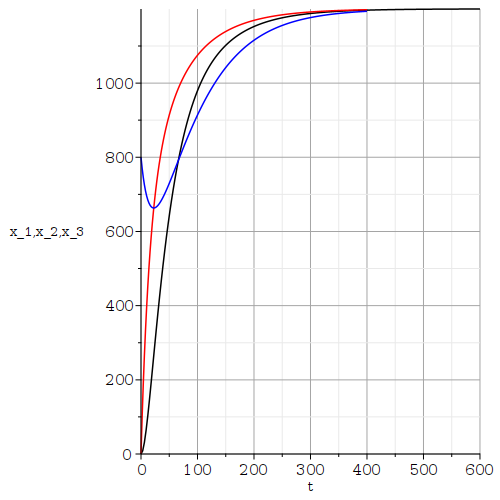
Il semble que \(\displaystyle \lim_{t\to \infty} x_i(t) = 1200\) gr for \(i=1,2,3\). Ceci peut être confirmé par les commandes suivantes de Maple. La fonction dsolve() sans une requête pour une solution numérique va fournir (si possible) la solution exacte qui est requise pour la fonction limit().
> sol1 := dsolve( eq union inits, [x1(t),x2(t),x3(t)]); seq( limit(sol1[i],t=infinity) ,i=1..3);\[ \lim_{t \to \infty} x1(t) = 1200, \lim_{t \to \infty} x2(t) = 1200, \lim_{t\to \infty} x3(t) = 1200 \]
Donc, après une longue période, la concentration de sel dans chacun des réservoirs est d'environ 3 gr/l. Ceci n'est pas surprenant car une solution saline avec une concentration de 3 gr/l de sel est constamment ajoutée au réservoir T1.
Il est possible de réduire l'ordre d'une EDO d'ordre supérieur de la forme
\[ y^{n}(t) + a_{n-1} y^{n-1}(t) + ... + a_1 y'(t) + a_0 y(t) = f(t) \]à un système d'EDO d'ordre un. Il suffit de définir \(X_1= y, X_2= y', \ldots, X_n= y^{n-1}\) pour obtenir le système
\[ \begin{split} X_1'(t) &= X_2(t) \\ X_2'(t) &= X_3(t) \\ \ldots &\qquad \ldots \\ X_n'(t) &= y^{n}(t) = -a_{n-1} y^{n-1}(t) - ... - a_1 y'(t) - a_0 y(t) + f(t) \\ & = -a_{n-1} X_n(t) - ... - a_1 X_2(t) - a_0 X_1(t) + f(t) \end{split} \]Exemple Nous considérons le système de ressorts suivant.
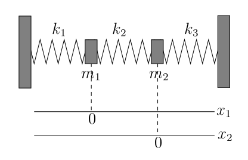
La masse du premier bloc est de \(m_1=1\) gr et la masse du deuxième bloc est de \(m_2=1\) gr. La constante du ressort pour le premier ressort est \(k_1=6\), la constante du ressort pour le deuxième ressort est \(k_2=2\), et la constant du ressort pour le troisième ressort est \(k_3=3\). Nous supposons qu'il n'y a pas d'amortissement. que le deuxième bloc est au repos initialement et que nous donnons une poussé initiale de \(0.5\) m/s au premier bloc à partir de sa position au repos. Nous voulons tracer la position de chacun des blocs en fonction du temps \(t\).
D'après la lois de Newton Force égale masse fois
accélération
, nous avons que
où \(x_1(t)\) et \(x_2(t)\) sont respectivement les positions du premier et deuxième bloc en fonction du temps \(t\). Les origines pour \(x_1\) et \(x_2\) sont déterminés par les positions des blocs au repos. Comme nous avons expliqué ci-dessus, nous pouvons réduire ce système de deux EDO d'ordre deux à un système de quatre EDO d'ordre un avec la substitution \(y_1 = x_1, y_2 = x_1' = y_1', y_3 = x_2\) et \(y_4 = x_2' = y_3'\). Nous obtenons
\[ \begin{split} y_1'(t) &= y_2(t) \\ m_1 y_2'(t) &= -k_1 y_1(t) + k_2(y_3(t) - y_1(t)) \\ y_3'(t) &= y_4(t) \\ m_2 y_4'(t) &= -k_3 y_3(2) - k_2(y_3(t) - y_1(t)) \end{split} \]Ce système est représenté dans Maple par les commandes suivantes.
> restart: equ1 := diff(y1(t),t) = y2(t); equ2 := m1*diff(y2(t),t) = -k1*y1(t) + k2*(y3(t)-y1(t)); equ3 := diff(y3(t),t) = y4(t); equ4 := m2*diff(y4(t),t) = -k3*y3(t) - k2*(y3(t)-y1(t));\[ \begin{split} & equ1 := \frac{\text{d}}{\text{d}t} y1(t) = y2(t) \\ & equ2 := m1 \,\left( \frac{\text{d}}{\text{d}t} y2(t) \right) = -k1 y1(t) + k2 (y3(t) - y1(t)) \\ & equ3 := \frac{\text{d}}{\text{d}t} y3(t) = y4(t) \\ & equ4 := m2 \, \left( \frac{\text{d}}{\text{d}t} y4(t) \right) = -k3 y3(t) - k2 (y3(t) - y1(t)) \end{split} \]
Si nous substituons les valeurs des constantes, nous obtenons alors
> equ1p := equ1;
equ2p := subs({m1=1,m2=1,k1=6,k2=2,k3=3}, equ2);
equ3p := equ3;
equ4p := subs({m1=1,m2=1,k1=6,k2=2,k3=3}, equ4);
\[
\begin{split}
& equ1p := \frac{\text{d}}{\text{d}t} y1(t) = y2(t) \\
& equ2p := \frac{\text{d}}{\text{d}t} y2(t) = -8 y1(t) + 2 y3(t) \\
& equ3p := \frac{\text{d}}{\text{d}t} y3(t) = y4(t) \\
& equ4p := \frac{\text{d}}{\text{d}t} y4(t) = -5 y3(t) + 2 y1(t)
\end{split}
\]
Les conditions initiales sont \( y_1(0) = x_1(0)=0, y_2(0) = x_1'(0)=0.5, y_3(0) = x_2(0)=0\) and \(y_4(0) = x_2'(0)=0\). Ainsi, nous obtenons le système suivant dans Maple.
> syst := {equ1p, equ2p, equ3p, equ4p, y1(0)=0, y2(0)=0.5, y3(0)=0, y4(0)=0};
\[
\begin{split}
& syst := \bigg\{ \frac{\text{d}}{\text{d}t} y1(t) = y2(t) ,
\frac{\text{d}}{\text{d}t} y2(t) = -8 y1(t) + 2 y3(t) ,
\frac{\text{d}}{\text{d}t} y3(t) = y4(2) , \\
& \frac{\text{d}}{\text{d}t} y4(t) = -5 y3(t) + 2 y1(t) ,
y1(0)=0, y2(0)=0.5, y3(0)=0, y4(0)=0 \bigg\}
\end{split}
\]
Nous résolvons ce système et traçons les graphes de \(x_1\) et \(x_2\) sur une même figure pour \(0 \leq t \leq 20\) secondes.
> sol := dsolve(syst,{y1(t),y2(t),y3(t),y4(t)}, type=numeric);
with(DEtools): with(plots):
plot1 := odeplot(sol,[t,y1(t)],0..10,color=blue,thickness=1):
plot2 := odeplot(sol,[t,y3(t)],0..10,color=green,thickness=1):
display({plot1,plot2},labels=["t","x1,x2"]);
\[
\begin{split}
& sol := \text{proc(x\_rkf45) \ldots end proc}
\end{split}
\]
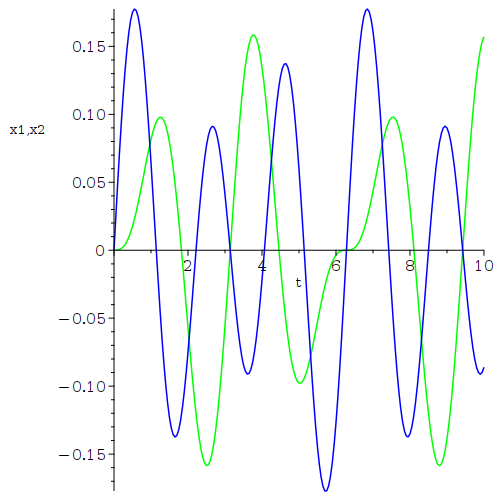
Nous déduisons de la figure ci-dessus que \(t \mapsto (x_1(t),x_2(t)) \) est périodique de période \(2\pi\). Ceci peut être démontré en trouvant la solution explicite du système d'EDO. Nous pouvons utiliser la commande de Maple pour trouver cette solution.
dsolve(syst,{y1(t),y2(t),y3(t),y4(t)});
\[
\begin{split}
&\bigg\{ y1(t) = \frac{\sin(2t)}{20} + \frac{2 \sin(3t)}{15}, y2(t)
= \frac{\cos(2 t)}{10} + \frac{2\cos(3t)}{5}, \\
&\qquad y3(t) = \frac{\sin(2t)}{10} - \frac{\sin(3t)}{15},
y4(t) = \frac{\cos(2t)}{5} - \frac{\cos(3t)}{5} \bigg\}
\end{split}
\]
Puisque 2 et 3 n'ont pas de facteur commun, nous obtenons que la
solution \(t \mapsto (x_1(t),x_2(t)) \) est de période \(2\pi\). Nous
laissons aux lecteurs le soin d'explorer ce qui arrive lorsque
nous changeons les valeurs des conditions initiales, des masses et des
constantes des ressorts. Avons-nous toujours des solutions
périodiques? Est-ce que le système peut être
chaotique
?
C'est la situation où nous avons \(X'(t) = A(t) X(t)\). Donc, le côté droit du système d'EDO dépend explicitement de \(t\). La théorie précédente ne s'applique pas à ce cas. Nous considérons un exemple pour illustrer comment Maple peut être utilisé pour étudier ce genre d'EDO.
Exemple: Nous avons vu dans le document l'EDO d'ordre deux
\[ x''(t) + \cos(t) x(t) = 0 \ . \]Cette EDO peut être réduite à un système d'EDO d'ordre un avec la substitution \(x_1 = x\) et \(x_2 = x'\).
> eq1:= { diff(x1(t),t)=x2(t), diff(x2(t),t)=-cos(t)*x1(t)};
\[
eq1 := \left\{ \frac{\text{d}}{\text{d}t} x1(t) = x2(t), \frac{\text{d}}{\text{d} t} x2(t) = -\cos(t) x1(t) \right\}
\]
Comme d'habitude, nous n'allons pas chercher la solution générale de ce système d'EDO à l'aide de la fonction dsolve() mais nous allons chercher une solution numérique pour une condition initiale donnée afin de tracer cette solution. Comme nous avons fait dans le document mentionné ci-dessus, nous assumons que la condition initiale \( (x_1(0),x_2(0)) = (0,1) \).
> SYST := eq1 union {x1(0)=0,x2(0)=1}:
X := dsolve(SYST,{x1(t),x2(t)},type=numeric,output=listprocedure);
\[
X := [t = proc(t) ... end\, proc, x1(t) = proc(t) ... end\, proc, x2(t) = proc(t) ... end\, proc]
\]
Nous traçons les graphes des fonctions \(x_1\) et \(x_2\) sur l'intervalle \([0,20]\).
> with(plots): odeplot(X,[t,x1(t)],0..20,labels=[`t`,`x_1`],gridlines=true); odeplot(X,[t,x2(t)],0..20,labels=[`t`,`x_2`],gridlines=true);
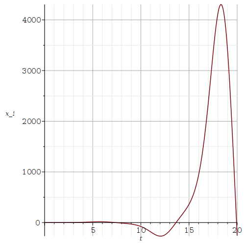
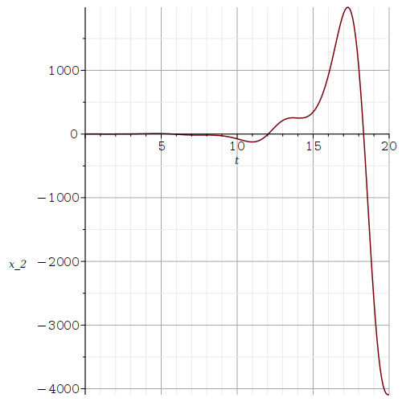
Nous avons fait référence à l'orbite
\( \{ (x_1(t),x_2(t)): t \geq 0 \} \) dans le document
. C'était le dessin de \( \{ (x(t), x'(t)) : t \geq 0 \} \)
associé aux conditions initiales \(x(0) = 0\) et \(x'(0) = 1\).
Nous avons aussi mentionné que ce genre d'orbites n'a pas les
propriétés que les orbites d'un système d'EDO autonomes d'ordre un
ont. En particulier, ces orbites
peuvent s'entre couper.
Nous allons illustrer ce phénomène avec notre système d'EDO. Nous
considérons l'orbite
associée à la condition initiale
\( (x_1(0),x_2(0)) = (1,1) \) et nous traçons sur une même figure
cette orbite
et l'orbite
associée à la condition initiale précédente
\( (x_1(0),x_2(0)) = (0,1) \).
> plt1 := odeplot(sol1,[x1(t),x2(t)],0..5,labels=[`x_1`,`x_2`],color='red'):
syst2 := eq1 union {x1(0)=1,x2(0)=1}:
sol2 := dsolve(syst2,{x1(t),x2(t)},type=numeric,output=listprocedure):
plt2 := odeplot(sol2,[x1(t),x2(t)],0..5,labels=[`x_1`,`x_2`],color='blue'):
display({plt1,plt2},gridlines=true);
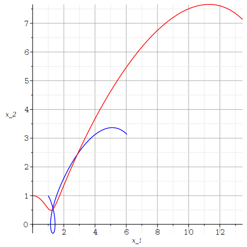
Non seulement avons-nous que les deux orbites
se
coupent mais une d'elle se coupe. En réalité, les solutions ne se
coupent pas. Si nous considérons les système d'EDO dans l'espace
\(t,x_1,x_2\); c'est-à-dire, si nous considérons
avec \( (t(0),x_1(0),x_2(0)) = (0,0,1) \) et \( (t(0),x_1(0),x_2(0)) = (0,1,1) \), alors les orbites ne se coupent.
> A1:=eval(t,sol1); A2:=eval(x1(t),sol1); A3:=eval(x2(t),sol1):
spA := spacecurve([A1(t),A2(t),A3(t)],t=0..5,color="red"):
B1:=eval(t,sol2); B2:=eval(x1(t),sol2); B3:=eval(x2(t),sol2):
spB := spacecurve([B1(t),B2(t),B3(t)],t=0..5,color="blue"):
display({spA,spB},labels=['t','x_1','x_2']);
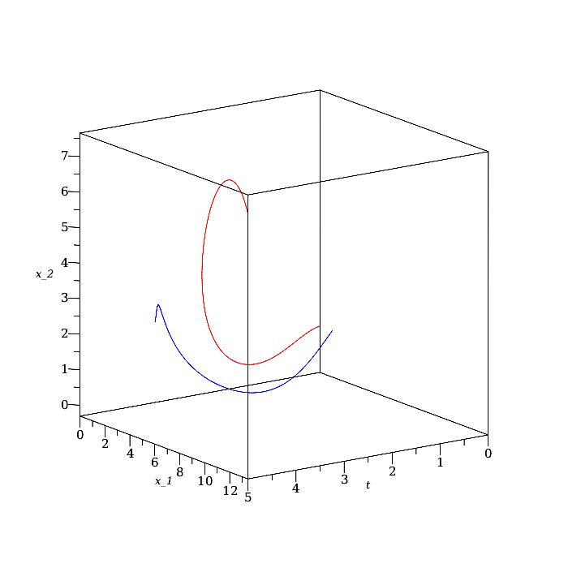
La figure précédente aurait peut être générée à l'aide de la fonction dsolve() pour résoudre numériquement le système de trois EDO ci-dessus et la fonction odeplot() pour tracer l'orbite \( \{(t(s),x_1(s),x_2(s)) : s \geq 0 \}\) dans \(\mathbb{R}^3\).